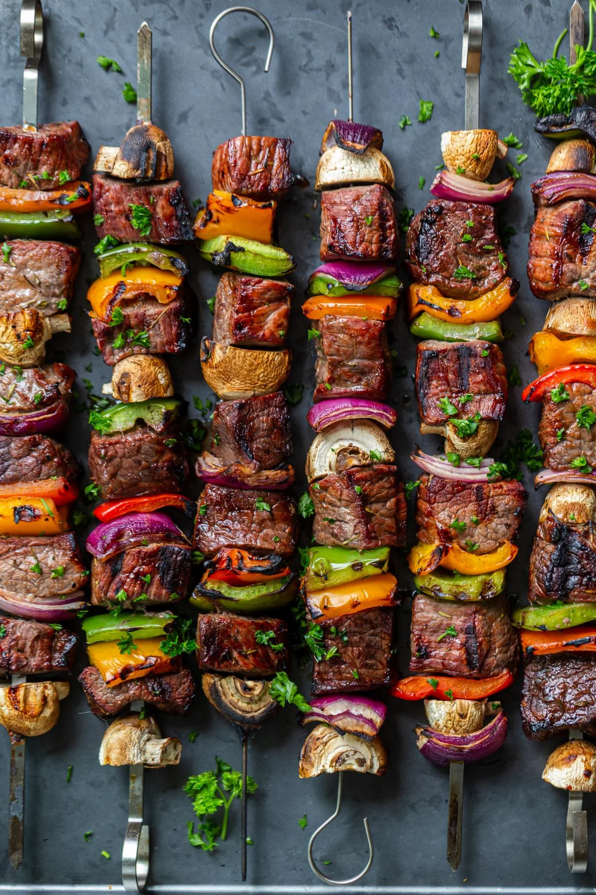

Kabob

Description:
Simply put, shish kabobs are a dish of cubed and skewered meats. In this
popular Middle Eastern dish, each hunk of meat is typically separated with
chunks of onion and bell peppers. The end result is a beautiful skewer
full of flavor and color.
Ingredients:
- 3 lb beef (Top Sirloin, Strip Steak)
- 1/4 cup low- sodium soy sauce
- 1/2 cup teriyaki sauce
- 1 tbsp steak seasoning (use your favorite)
- 1 cup red wine
- 1 large green bell pepper cut into cubes
- 1 large red bell pepper cut into cubes
- 1 large yellow bell pepper cut into cubes
- 8 oz mushrooms
- 1 large onion cut into pieces
- 1 tbsp salt adjust to taste
- 1 tbsp ground black pepper adjust to taste
Steps:
-
Cut beef into one-inch cubes. Place meat in a deep dish. Cover with soy
sauce, teriyaki sauce, wine and steak seasoning. Allow beef to marinate
for at least 30 minutes to 2 hours.
-
Prepare bell peppers, mushrooms and onions. Place them in a large bowl
and season with salt and pepper.
- Thread beef, mushrooms, bell peppers and onion on to a skewer.
-
Grill for about 3 minutes on per side, or until the outside has a nice
crust.
- Allow skewers to rest for about 5 minutes before serving. Enjoy!